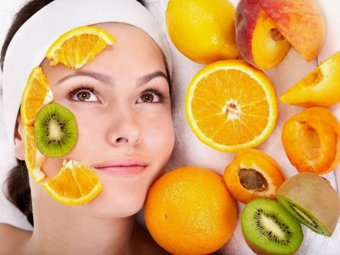
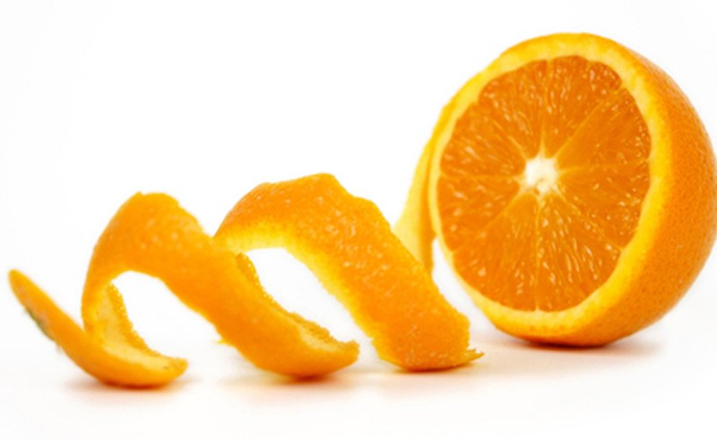
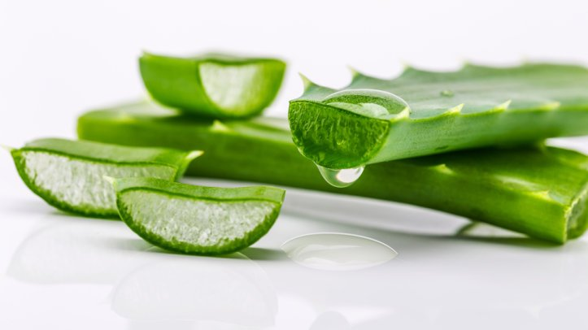

Cara Memutihkan Wajah Secara Alami dengan Biaya Murah dan AmanBY : SPANICA PAMFILIA LINRI |
|||||||||||
 Memiliki kulit cerah berseri adalah dambaan setiap orang, khususnya wanita. Kulit wajah yang cerah adalah cermin bahwa wajah mendapat perawatan yang baik. Banyak cara yang dapat dilakukan untuk mendapatkan wajah yang putih dan cerah. Mulai dari perawatan secara tradisional hingga perawatan dengan menggunakan produk – produk kecantikan, seperti krim pemutih.Menggunakan krim pemutih wajah boleh-boleh saja, tapi pastikan terlebih dahulu bahwa krim tersebut memiliki sertifikat/ lisensi dari BPOM. Jika krim tersebut memang benar memiliki lisensi tersebut, anda bisa menggunakannya, karena krim tersebut sudah lolos uji tes dan aman untuk anda gunakan. Anda juga bisa menggunakan bahan–bahan alami untuk merawat wajah. Karena cara ini merupakan salah satu solusi mendapatkan kulit wajah yang putih dan cerah, dan jika digunakan secara tepat dan rutin maka hasil yang diperoleh bisa memuaskan dan tentunya tak perlu merogoh kocek terlalu dalam. |
Berikut ini cara memutihkan wajah menggunakan bahan-bahan alami :1. Kulit Jeruk Vitamin C adalah antioksidan yang berperan penting dalam memperbaiki kerusakan kulit yang disebabkan oleh radikal bebas. Vitamin C pada jeruk juga merupakan agen bleaching alami yang dapat menghilangkan kekusaman akibat terpapar sinar matahari.
2. Lidah Buaya Lidah buaya mengandung aloesin, suatu zat yang dapat menghambat pembentukan melanin yang menyebabkan kulit menjadi gelap. Itulah mengapa lidah buaya banyak ditemukan dalam produk – produk kecantikan.
|
~ Adapun buah yang bisa dibuat untuk memutihkan wajah ~
|
|||||||||